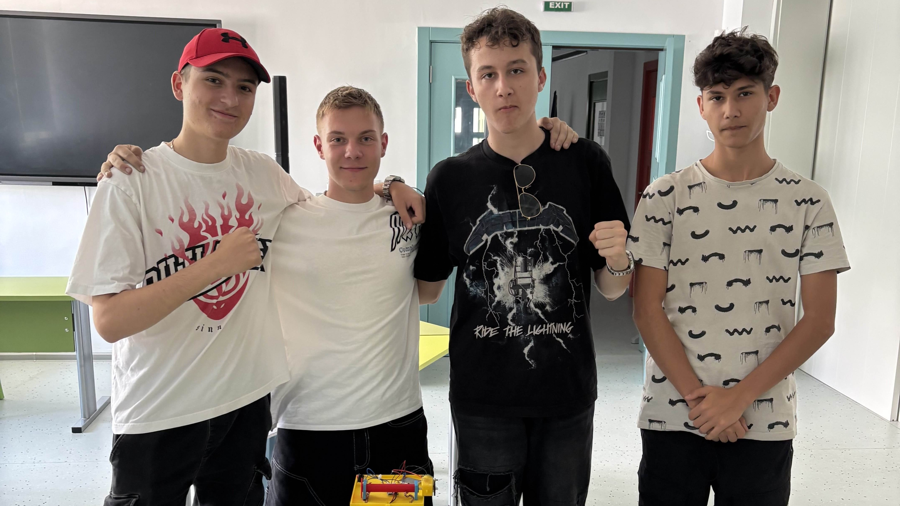

За нас

Solar Wave Blinds е българска компания, специализирана в разработката на иновативни щори със соларни панели.
Нашата мисия е да обединим комфорта на модерния дом и офиса с енергийната ефективност.
Щорите ни не само осигуряват защита от слънце и стилен дизайн, но и произвеждат електроенергия от слънчевата светлина.
Ние работим с висококачествени материали и съвременни технологии, за да гарантираме дълготрайност, надеждност и ефективност на всяко наше изделие.
Нашите партньори
- Solarpro — водеща българска компания за соларни решения.
- Schüco — световен лидер в системи за прозорци и фасади.
- Huawei Solar — глобален производител на соларни инвертори и енергийни решения.
Благодарение на сътрудничеството си с тези компании можем да предложим продукти с високо качество и надеждност.